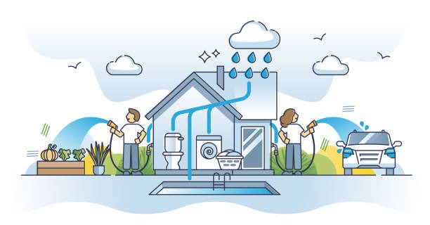

Harvest the Sky: Sustainable Rainwater Solutions for a Greener Tomorrow
Making every drop count.
Welcome to Your Rainwater Harvesting Guide
Welcome to Harvest the sky, your dedicated resource for all things rainwater harvesting! In a world dealing with water scarcity and environmental challenges, capturing rainwater is one of the simplest, smartest, and most sustainable choices you can make for your home, garden, and future.
Why Rainwater Harvesting?
- Reduce Water Bills: Save on municipal water use.
- Sustainable Living: Lower your environmental impact.
- Healthier Gardens: Natural, chemical-free water improves plant growth.
- Emergency Backup: Independent water source during droughts or shortages.
- Lower Flooding Risk: Reduce stormwater runoff and soil erosion.
How It Works
- Collection: Rainwater flows from the roof into gutters.
- Filtration: Leaves and debris are removed.
- Storage: Clean water is stored in a tank or cistern.
- Distribution: Used for gardening, toilets, washing, or purified for drinking.